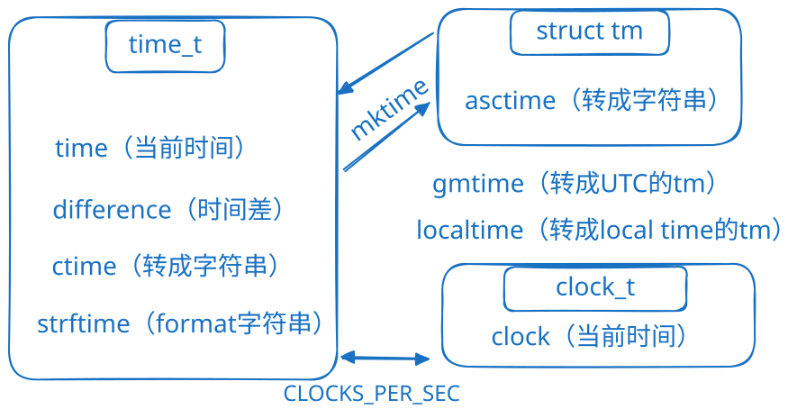

| Time manipulation - Functions | Description |
|---|---|
| clock | Clock program (function) |
| difftime | Return difference between two times (function) |
| mktime | Convert tm structure to time_t (function) |
| time | Get current time (function) |
| Conversion - Functions | Description |
|---|---|
| asctime | Convert tm structure to string (function) |
| ctime | Convert time_t value to string (function) |
| gmtime | Convert time_t to tm as UTC time (function) |
| localtime | Convert time_t to tm as local time (function) |
| strftime | Format time as string (function) |
| Macro constants | Description |
|---|---|
| CLOCKS_PER_SEC | Clock ticks per second (macro) |
| NULL | Null pointer (macro) |
| types | Description |
|---|---|
| clock_t | Clock type (type) |
| size_t | Unsigned integral type (type) |
| time_t | Time type (type) |
| struct tm | Time structure (type) |
Delay
// waiting.cpp -- using clock() in a time-delay loop
#include <iostream>
#include <ctime> // describes clock() function, clock_t type
int main()
{
using namespace std;
cout << "Enter the delay time, in seconds: ";
float secs;
cin >> secs;
clock_t delay = secs * <a data-footnote-ref href="#user-content-fn-1">CLOCKS_PER_SEC</a>; // convert to clock ticks
cout << "starting\a\n";
clock_t start = clock();
while (clock() - start < delay ) // wait until time elapses
; // note the semicolon
cout << "done \a\n";
// cin.get();
// cin.get();
return 0;
}
发现 i++和++i 速度其实差不多（这和《C++ primer plus》说的不一样）
#include <iostream>
#include <ctime>
int main()
{
using namespace std;
clock_t start, end;
double elapsed_time;
start = clock();
for (long i = 0; i < 100000000; ++i)
;
end = clock();
elapsed_time = static_cast<double>(end - start) / CLOCKS_PER_SEC;
cout << "Elapsed time: " << elapsed_time << " seconds" << endl;
start = clock();
for (long i = 0; i < 100000000; i++)
;
end = clock();
elapsed_time = static_cast<double>(end - start) / CLOCKS_PER_SEC;
cout << "Elapsed time: " << elapsed_time << " seconds" << endl;
return 0;
}
(base) kimshan@MacBook-Pro output % ./"test1"
Elapsed time: 0.152691 seconds
Elapsed time: 0.136307 seconds
(base) kimshan@MacBook-Pro output % ./"test1"
Elapsed time: 0.13305 seconds
Elapsed time: 0.132354 seconds
(base) kimshan@MacBook-Pro output % ./"test1"
Elapsed time: 0.158112 seconds
^[[AElapsed time: 0.13959 seconds
(base) kimshan@MacBook-Pro output % ./"test1"
Elapsed time: 0.145602 seconds
^[[AElapsed time: 0.139031 seconds
(base) kimshan@MacBook-Pro output % ./"test1"
Elapsed time: 0.145388 seconds
^[[AElapsed time: 0.136443 seconds
(base) kimshan@MacBook-Pro output % ./"test1"
Elapsed time: 0.142237 seconds
^[[AElapsed time: 0.141559 seconds
(base) kimshan@MacBook-Pro output % ./"test1"
Elapsed time: 0.147315 seconds
^[[AElapsed time: 0.141024 seconds
(base) kimshan@MacBook-Pro output % ./"test1"
Elapsed time: 0.138636 seconds
^[[AElapsed time: 0.134697 seconds
(base) kimshan@MacBook-Pro output % ./"test1"
Elapsed time: 0.14576 seconds
^[[AElapsed time: 0.140552 seconds
(base) kimshan@MacBook-Pro output % ./"test1"
Elapsed time: 0.147056 seconds
^[[AElapsed time: 0.13832 seconds
(base) kimshan@MacBook-Pro output % ./"test1"
Elapsed time: 0.142151 seconds
^[[AElapsed time: 0.137866 seconds
(base) kimshan@MacBook-Pro output % ./"test1"
Elapsed time: 0.148099 seconds
^[[AElapsed time: 0.141851 seconds
(base) kimshan@MacBook-Pro output % ./"test1"
Elapsed time: 0.148521 seconds
^[[AElapsed time: 0.138828 seconds
(base) kimshan@MacBook-Pro output % ./"test1"
Elapsed time: 0.151287 seconds
Elapsed time: 0.134296 seconds
Demo：time()，struct tm
struct tm {
int tm_sec; // 秒，正常范围从 0 到 59，但允许至 61
int tm_min; // 分，范围从 0 到 59
int tm_hour; // 小时，范围从 0 到 23
int tm_mday; // 一月中的第几天，范围从 1 到 31
int tm_mon; // 月，范围从 0 到 11
int tm_year; // 自 1900 年起的年数
int tm_wday; // 一周中的第几天，范围从 0 到 6，从星期日算起
int tm_yday; // 一年中的第几天，范围从 0 到 365，从 1 月 1 日算起
int tm_isdst; // 夏令时
}
#include <iostream>
#include <ctime>
int main()
{
using namespace std;
time_t seconds;
time(&seconds);
//time_t time(time_t *t)
struct tm *info = localtime(&seconds);
cout << info->tm_hour << "时 " << info->tm_min << "分 " << info->tm_sec << "秒" << endl;
return 0;
}
(base) kimshan@MacBook-Pro output % ./"test1"
12时 4分 23秒
[1] https://cplusplus.com/reference/ctime/
in ctime ↩